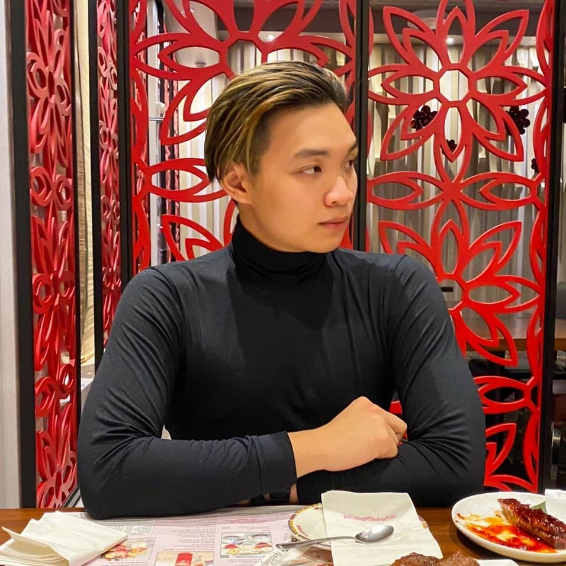
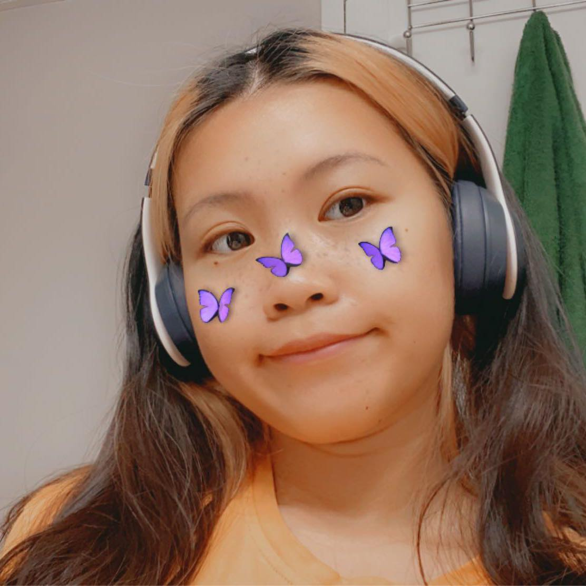

Trieu and Linh bio page


Aaron Do
I'm a current Fanshawe student, I have study in Fanshawe for 2 year through different course and Interactive Media design is my current one. I used to take Music Industrial Art as a major but I have changed my mind after 1 year then move to downtown camouc to continue on Interactive media design
Linh Nguyen
Linh also a curren Fanshawe student with the motivation to be a designer on many sections. she also have two cats and two guinea pigs. She gruaduate in Mississauga then ove to London to study Fanshawe as a designer.